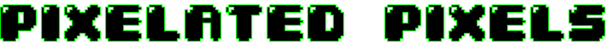

WELKOM BIJ PIXELATED PIXELS
Pixelated Pixels is een podcast die zich verdiept in de klassieke retro games en arcade halls. Duik met ons mee in de geschiedenis van gaming en ontdek hoe de gaming wereld zich door de jaren heen heeft ontwikkeld.
Wat maakten de retro games & arcade halls zo populair en zullen ze ooit nog volledig terugkeren? Tijdens de afleveringen gaan we niet alleen kijken naar onze eigen meningen, maar ook naar jullie meningen. Op onze contactpagina kun je je vragen stellen die je voor ons hebt, maar je kan ook je eigen ervaringen met retro games en arcade halls met ons delen. Vul je gegevens in en wie weet zullen we contact met je opnemen voor de volgende aflevering.